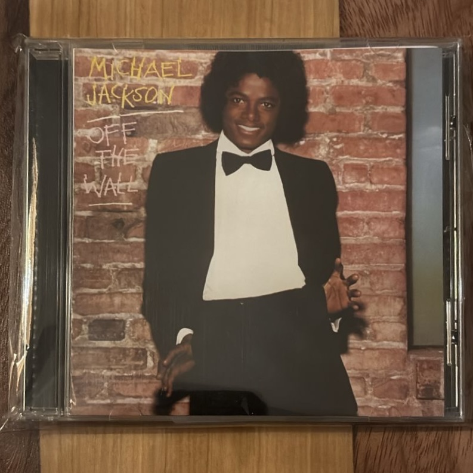

Off the Wall

Artista: Michael Jackson
Año de edición: 1979
Descripción: El álbum clave que consagró a Michael Jackson como artista solista adulto. Presenta una portada icónica con pared de ladrillos y smoking, producida por Quincy Jones.
Volver a la página principal